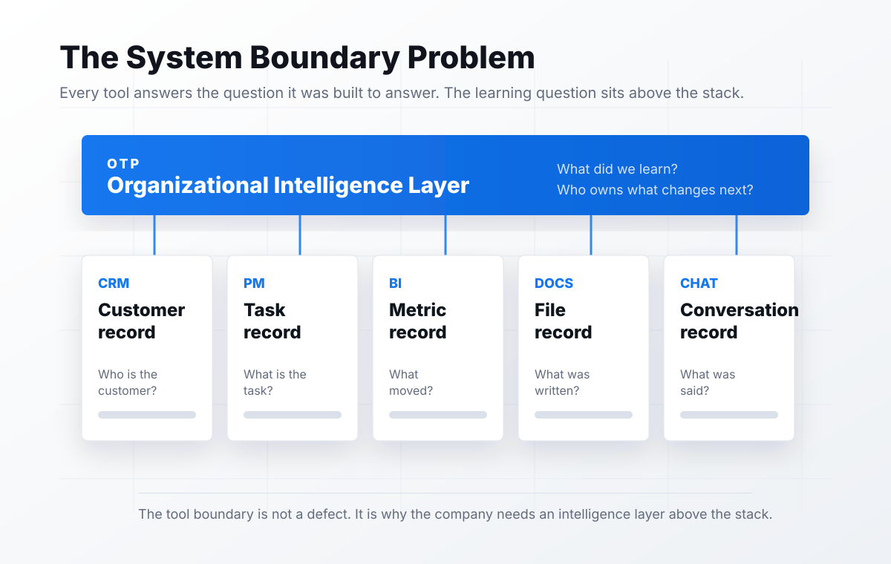

Why Software Did Not Solve Knowledge.
A chapter from The Intelligent Organization, the OTP manifesto for Organizational Intelligence Management.

The modern company bought software for every function.
The stack got bigger. The learning layer stayed missing.
The software promise
Software promised memory. It gave the company records.
That was useful. It was also incomplete.
A record can tell you what happened. It cannot always tell you what mattered. It cannot always tell you what changed.
It cannot always tell you what the organization should do differently next time.
Storage is not the same thing as organizational learning.
Storage is not movement
Software changed where information lives.
It did not always change how intelligence moves. The CRM knows the customer record. The project system knows the task. The document system knows the file.
The chat system knows the conversation. The dashboard knows the metric. But none owns the complete question.
What has the organization learned, and what should change because of it?
The object era
The first era of business software organized objects.
It gave work a place to live. It did not give intelligence a manager.
Original framework
The System Boundary Problem

Every tool answers the question it was built to answer. The learning question sits above the stack.
CRM boundary
The customer record is not customer memory.
It usually does not know the unspoken reason the customer is at risk or whether a customer lesson changed the way the company operates.
Project boundary
The task record is not operating memory.
It usually does not know whether the blocker is isolated, whether the same root cause slowed three teams, or whether the workflow itself needs to change.
Dashboard boundary
The metric record is not performance memory.
It usually does not know which decision created the movement, whether the variance is part of a repeated pattern, or who owns the lesson.
Chat boundary
Chat is not memory. It is a river.
Important decisions pass through it. Unclear commitments pass through it. Tiny corrections pass through it.
Then the river keeps moving.
The conversation record is not the same thing as organizational learning.
Why more tools made it worse
Every new tool created a new place for truth to live.
That helped teams move faster at first. Then the company had to remember where each kind of truth went.
Customer truth lived in one place. Task truth lived in another. Metric truth lived somewhere else. Decision truth lived wherever the meeting happened.
Context lived in people.
What sits above the stack
The missing layer is not another system of record.
It is a system of organizational learning. It reads across the stack and connects decisions, results, customer lessons, repeated issues, metrics, and behavior.
It gives humans and agents one place to see what the company knows.
Executive implication
Stop asking whether the company has the right knowledge tool.
- Connect information across tools.
- Preserve the reason behind decisions.
- Link actions to outcomes.
- Detect repeated patterns.
- Assign follow-through to humans and agents.
If the answer is no, the company does not have a knowledge problem. It has an intelligence management problem.
Closing
The last generation of software helped the company operate.
The next generation will help the company learn.
That is not a feature.
That is not a plug-in.
That is not a smarter search box.
It is a different management category: Organizational Intelligence Management.